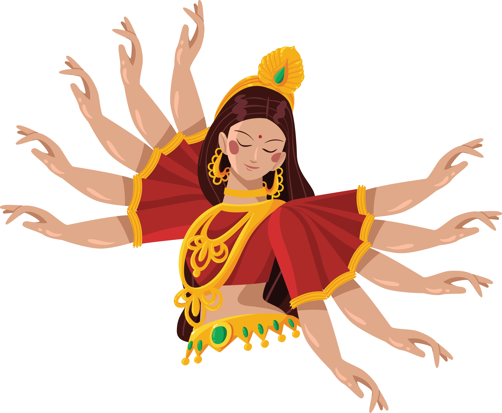

Durga
Durga is one of the most respected goddesses in Hindu mythology, representing strength, protection, and victory. Her name comes from the word "durg," which means "fort" or "invincible." She is the one who defeats chaos and evil, bringing harmony and order to the world. Durga is the highest embodiment of female power (shakti), being both a protective mother and a fierce warrior.
Her festival, Navaratri, is highly respected in India and around the world. It is a nine-day celebration during which people honor the goddess with prayers, dance, and songs. Durga’s example reminds us that inner strength and perseverance help overcome all obstacles. We chose not only our team’s name but also our logo after her because we want our team’s spirit to be similar to her qualities. She is usually shown with many arms, which for us symbolizes that although we work together for a common goal, each person brings something different to the team.